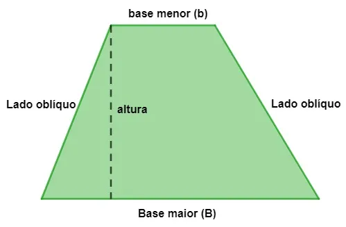

Trapezoide Irregular
Um trapézio é um polígono de quatro lados que possui dois lados paralelos conhecidos como base e dois lados não paralelos conhecidos como lados oblíquos.
Para calcular a área do trapézio, utilizamos a fórmula:
Existem três tipos de trapézio, são eles: trapézio escaleno, trapézio isósceles e trapézio retângulo.
- O trapézio é escaleno quando os lados não paralelos são diferentes;
- O trapézio é isósceles quando os lados não paralelos são congruentes;
- O trapézio é retângulo quando um lado não paralelo faz um ângulo de 90º com as bases da figura.
Elementos do trapézio
O trapézio é um tipo de quadrilátero, sendo uma forma geométrica bastante recorrente. O que faz com que um quadrilátero seja classificado como um trapézio é o fato de ele possuir dois lados paralelos e dois lados não paralelos, conhecidos como lados oblíquos.
